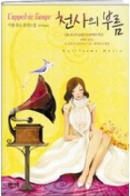
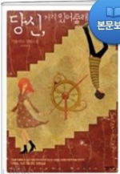
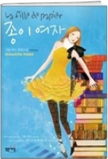

기욤뮈소
•출생: 1974년 6월 6일
•학력:몽펠리에제1대학교대학원
•데뷔:2001년 소설 '스키다마링크'
대표작품1
•제목: 천사의 부름
•긴장되고 극적이면서도 일상의 사소함을 놓치지 않는 소재의 내용을 다룹니다. 사랑에 대한 감정이 식은 사람들에게 감성을 불러일으켜 주는 책입니다.
대표작품2
•제목: 당신 거기 있어 줄래요
•한남자가 사랑하는 연인을 구하기 위해 과거로 돌아가는 이야기 바쁜 현대인들에게 사랑의 정의를 다시금 일깨워 주는 책 입니다.
대표작품3
•제목: 종이여자
•사랑이 가장 위대한 판타지이고 서스펜스이다 라는 것을 일깨워 주는 책